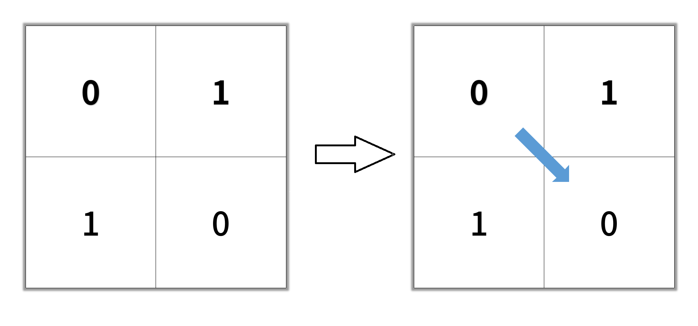
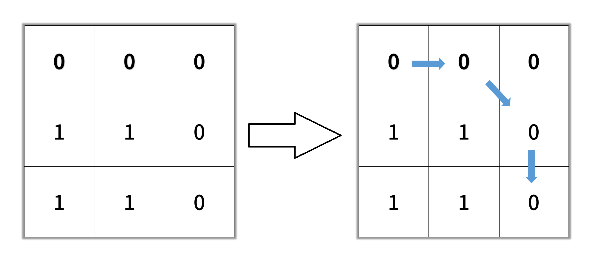

| Category | Difficulty | Likes | Dislikes |
|---|---|---|---|
| Algorithms | Medium | 7292 | 272 |
facebook | bloomberg | amazon | google | uber | microsoft | databricks | apple | anduril | yahoo | tiktok | goldman-sachs | palo-alto-networks
Given an n x n binary matrix grid, return the length of the shortest clear path in the matrix. If there is no clear path, return -1.
A clear path in a binary matrix is a path from the top-left cell (i.e., (0, 0)) to the bottom-right cell (i.e., (n - 1, n - 1)) such that:
0.The length of a clear path is the number of visited cells of this path.
Example 1:

Input: grid = [[0,1],[1,0]]
Output: 2Example 2:

Input: grid = [[0,0,0],[1,1,0],[1,1,0]]
Output: 4Example 3:
Input: grid = [[1,0,0],[1,1,0],[1,1,0]]
Output: -1
Constraints:
n == grid.lengthn == grid[i].length1 <= n <= 100grid[i][j] is 0 or 1